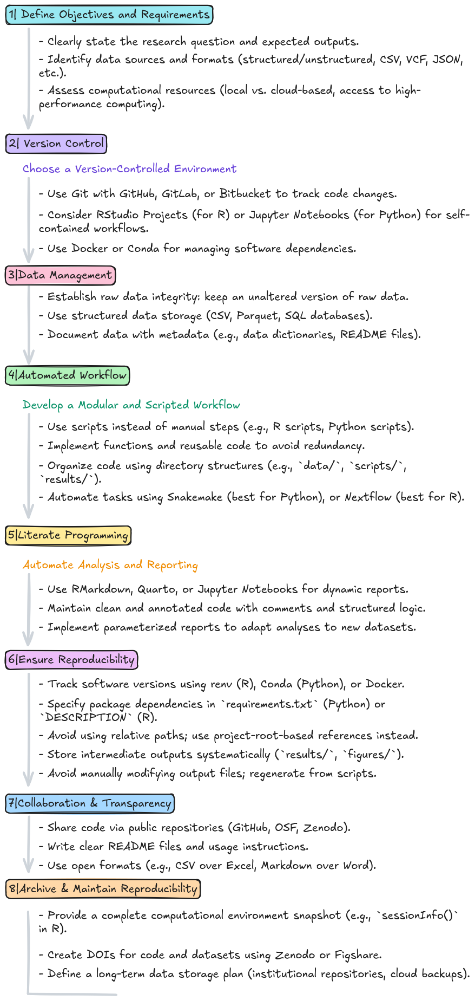

General information & System setup
Prerequisites | Mandatory
You should bring your own laptop. This course teaches essential data analysis skills, including how to set up and manage your computing environment. Using your own laptop allows you to practice continuously and apply what you learn directly to your research.
An RStudio Server account will be used during the first three classes to introduce R.
From class 4 onward, you will install and configure R, RStudio, and Git on your own computer.
You must have administrator privileges on your computer in order to install software.
How to setup your system for reproducible data analysis
Reproducibility is a cornerstone of reliable data analysis, ensuring that results can be consistently replicated and built upon.
Setting up a system for reproducible data analysis requires careful planning and adherence to best practices. Bellow is an overview of the major steps a researcher should take into consideration.

Tools used for this course
In this course, we will use R and RStudio for data analysis, and Git and GitHub for version control:
- R is a powerful programming language designed for statistical computing and data analysis.
- RStudio is an integrated development environment (IDE) that provides a user-friendly interface for writing, debugging, and managing R code.
- Git is a version control system that tracks changes in code, allowing for efficient collaboration and history management.
- GitHub is a cloud-based platform for hosting Git repositories, enabling code sharing, collaboration, and version tracking across teams.
By combining these tools, researchers can streamline their workflows, ensure reproducibility, and foster collaboration and efficiency in data-driven projects.
Install software
- First install R: https://cran.r-project.org/
- Then install RStudio: https://posit.co/download/rstudio-desktop/
- Install git: https://git-scm.com/downloads
- Detailed instructions for each Operating System (Linux, Mac, Windows) here. - Create an account in GitHub: https://docs.github.com/en/get-started/start-your-journey/creating-an-account-on-github
Bibliography
Online resources and Bibliography (for future learning)
Websites
- R Project (The developers of R.)
- Quick-R (Roadmap and R code to quickly use R.)
- R-bloggers (Great resource for posts related to alternative ways to do the same thing in R.)
- Bioconductor workflows (R code for pipelines of genomic analyses.)
- R Project (The developers of R.)
Free Online Books
- R for Data Science (Hadley Wickham, Mine Cetinkaya-Rundel & Garrett Grolemund. A great book for structured learning of R for data science, starting from simple concepts and building up step by step.)
- Modern Statistics for Modern Biology (Wolfgang Huber and Susan P. Holmes. Great book to learn Biostatistics using R.)
- Introduction to Data Science: Data Wrangling and Visualization with R (Rafael A. Irizarry. High-quality R code, with clear and rigorous explanations, demonstrating how to format data and visualise it using
ggplot2.) - Introduction to Data Science: Statistics and Prediction Algorithms Through Case Studies (Rafael A. Irizarry. Hands-on tutorials focused on learning how to use R for data analysis using carefully chosen case studies, where data analysis brings information to light.)
- Cookbook for R (Winston Chang. Well-structured R scripts (practical “recipes”) for common programming tasks.)